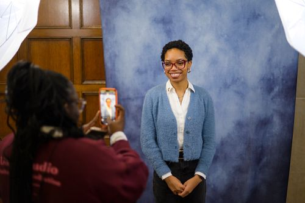

Application Matierials
Your application materials are often your first impression with potential employers. This section provides you with the tools and resources to create compelling resumes, cover letters, and portfolios that highlight your skills and experiences effectively.
Craft a Resume that Tells Your Story
Your resume is often your first impression—an opportunity to highlight your unique strengths, skills, and experiences to potential employers. Whether you’re starting from scratch or looking to polish an existing resume, these resources are here to help you every step of the way.
UMSI students are in high demand, and a clear, well-organized resume will help you stand out among applicants. On this page, you'll find practical tips, templates, and guides—all tailored to the needs of School of Information students and aligned with employer expectations.
Need feedback? You can always meet with a CDO Career Coach to review your materials.
Resume Writing Made Easy: Steps to Success
- Download a UMSI-Approved Template: Start with a format that works—no need to design from scratch.
- Gather Your Experiences: List jobs, internships, volunteer roles, coursework, and projects most relevant to your goals.
- Write Impactful Bullets: Use action verbs and highlight your skills, results, and unique contributions.
- Tailor for Each Opportunity: Customize your resume for every job or internship you pursue.
- Review and Edit: Proofread for errors, check formatting, and ask for feedback from peers or a career coach.
Resume Resources
-
UMSI Resume Guide and Rubric
Comprehensive UMSI guide including tips, formatting rules, and sample accomplishments. -
Writing Effective Resume Bullets
Learn how to describe your work and impact in ways employers notice. -
Resume Rubric
Evaluate your resume using the same criteria as UMSI’s Career Development Office. -
Application Materials: Workshops and More
Attend a Resume Refresh workshop, review video tutorials, or access additional templates.
Ready for review? Book a resume review appointment with a CDO Career Coach.
Resume FAQ
-
How long should my resume be?
For most UMSI students and new grads, one page is best. More experienced professionals may require two pages. -
Do I need a different resume for each application?
It’s wise to tailor your resume to the requirements and keywords of each opportunity. -
Is it okay to include coursework or student projects?
Absolutely! UMSI coursework and projects are valued by employers, especially if they show relevant skills and impact. -
How often should I update my resume?
Update your resume every semester, after major projects, or whenever you gain a new role or responsibility.
Writing Professional Cover Letters
A cover letter complements your resume by allowing you to tell your story, share your motivations, and illustrate your fit for the specific role or organization. Unlike a resume, which lists facts, a cover letter should explain why you're interested in this position and why you're a great match. Start with a strong introduction -ideally addressing a specific person — and follow with one or two detailed paragraphs connecting your experiences to the job's requirements. End with a call to action, such as your desire to discuss your application further.
Cover Letters 101
- Address the letter to a specific person (if possible) rather than "To Whom It May Concern."
- Start strong with a brief introduction and statement of interest.
- Use one or two examples to show how your skills match the position.
- Keep it to one page and customize it for each application.
- Demonstrate enthusiasm for the position and company.
Cover Letter FAQ
-
Do I need to write a new cover letter for every job application?
While it may be tempting to use the same cover letter for multiple applications, tailoring your cover letter for each role is highly recommended. Customizing your letter allows you to address the specific requirements of the job and shows the employer that you've done your research and are genuinely interested in their organization. A well-tailored cover letter helps you stand out from other applicants. -
What should I do if I don't know who to address the cover letter to?
If you're unable to find the name of the hiring manager after thorough research, it's acceptable to use a general but professional salutation. "Dear Hiring Manager" or "Dear [Job Title] Search Committee" are commonly used alternatives. Avoid using outdated or generic salutations like "To Whom It May Concern" when possible, as a little effort to personalize your letter can make a positive impression.
Showcasing Your Works in a Portfolio
A portfolio demonstrates your work through samples, case studies, and creative or technical projects — especially important for fields like art, design, writing, or engineering.
Best Practices
- Select and curate your best, most relevant work for each opportunity.
- Briefly explain each project - your role, the process, and the outcome.
- Keep your portfolio well-organized.
- Choose a user-friendly platform or website builder (such as Behance, Wix, WordPress, GitHub for code, or personal websites) and update regularly.
- Ensure that your portfolio is mobile-friendly and easy to navigate; consider adding a downloadable PDF version upon request.
Check out these cool sample portfolios!
Creating Your LinkedIn Profile

Your LinkedIn profile is a living document that allows you to showcase your personal brand and expand your professional network worldwide. Unlike a resume, it offers space to highlight extracurriculars, volunteer work, personal interests, and endorsements. Start with a professional headshot and a unique headline that summarizes what you do or aspire to do. Use the summary section to introduce yourself, your goals, and what you're passionate about. Add detailed entries for your experiences, keeping keyword optimization in mind so recruiters can find you.
Did you know? The University Career Center offers free self-service professional headshots! Sign up for a session today.
Pro Tips
- Write a compelling headline and summary that showcase your strengths and interests.
- Add a professional photo and customize your LinkedIn URL.
- Regularly update your experience, skills, and any projects or certifications.
- Request recommendations from supervisors or professors for credibility.